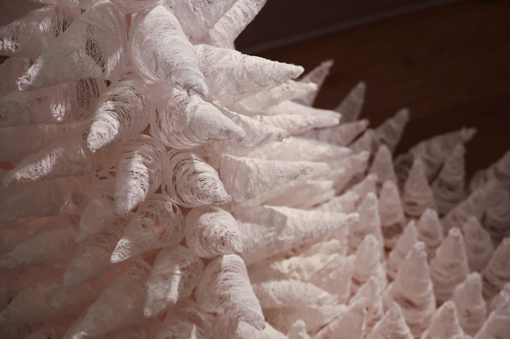
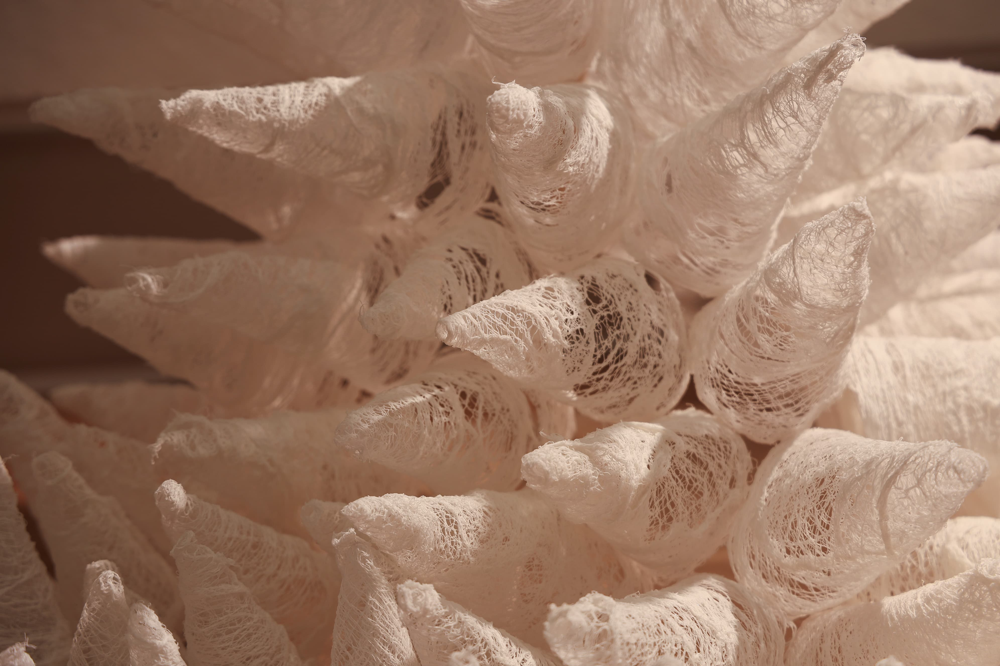
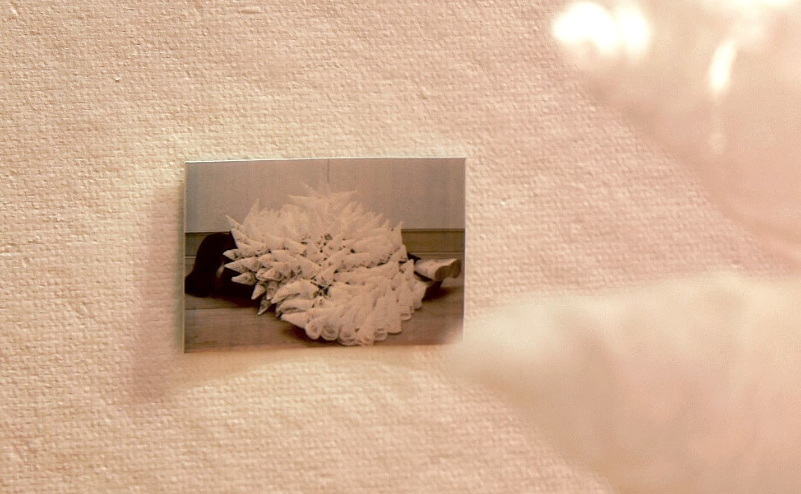
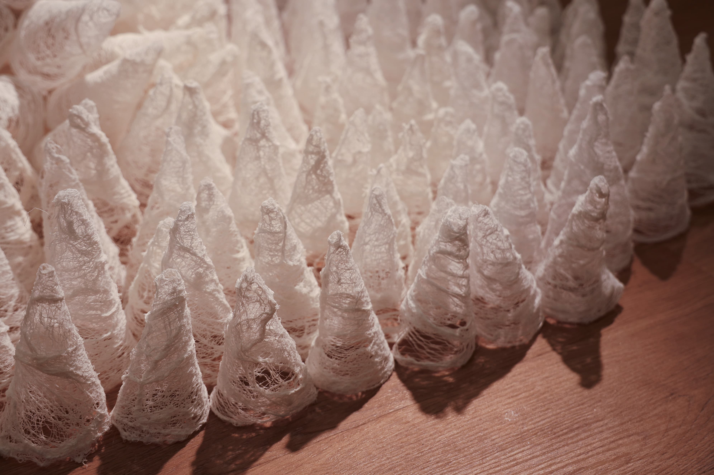

This installation consists of gauze cones arranged in a tent-like formation—an architecture that reads as both protection and provocation. The structure suggests a blanket, a sheltering canopy: hedgehog-like spikes whose morphology wavers between tenderness and threat.
The piece stages a moment for the negotiation of proximity. Placed at the entrance, viewers are drawn toward its textile intimacy, yet hesitate before crossing the threshold; the cones both invite and repel. In this hesitation lies the core of my practice: the moment where desire meets instability, where comfort is undercut by uncertainty.
Gauze—a material associated with healing, dressing wounds, and vulnerability—is pulled into firm conical points, forms that could pierce but are soft when touched. The cones resemble the defenses animals form instinctively—armor against intrusion. Yet their softness undermines the possibility of violence. They are defenses that fail to defend fully, shelters that fail to shelter completely.
By occupying the gap between refuge and resistance, the gauze tent becomes a scene of relational negotiation. It materializes how we brace ourselves in closeness, how contact is hedged with risk, and how protection itself can remain permeable.
What does it mean for something to want to touch, yet be afraid of being touched?
The work recognizes hesitation as an affective space—where defenses soften, expectations wobble, and we learn how to persist inside uncertain shelter.



